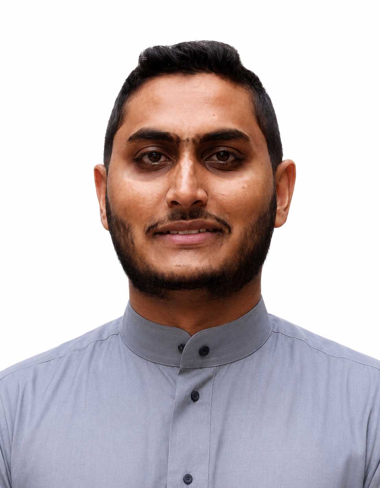

MPhil/PhD researcher in Artificial Intelligence in Medical Imaging with hands-on experience as a Research Assistant at the University of Mauritius, Southwest University and Prince Sultan Univerisity. I received my BEng degree in Mechatronics Engineering from the University of Mauritius in 2021. My research focuses on artificial intelligence, computer vision and medical imaging..

MAVisiting PhD Researcher at the AIDA Lab, Prince Sultan University, Riyadh, Saudi Arabia conducting research in artificial intelligence, medical imaging, computer vision, and explainable AI.
Development of a sustainable and integrated e-waste management strategy using Industry 4.0, contributing to the circular economy — the case of Mauritius.
Decision-making support for diabetic retinopathy in Mauritius through deep and transfer learning (Phase 2 — Computing).
Early detection of gastric cancer using deep learning.
Research: Prediction of Colorectal Cancer Using Deep Neural Networks and Explainable Artificial Intelligence.
MPhil/PhD Scholarship from the Higher Education Commission of Mauritius.
Visiting doctoral researcher under the same MPhil/PhD research programme.
Visiting doctoral researcher under the same MPhil/PhD research programme.
Thesis: Design of an integrated monitoring and control system to promote home-based farming using smart farming technologies.
A-Levels: Computer Science, Mathematics, Physics, French, General Paper.
Peer-reviewed journal articles, international conference papers, and conference abstracts. ★ Best Paper Award — WiDS-PSU 2023
I'm open to research collaborations, publications, and opportunities in AI, computer vision, and medical imaging. Feel free to reach out.